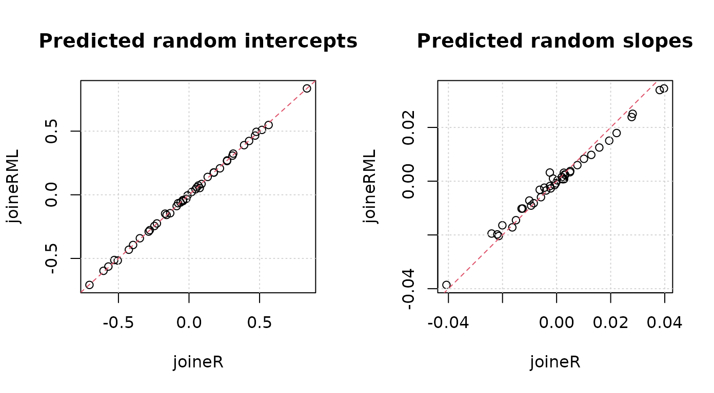

Introduction
The joineRML package implements methods for analyzing
data from multiple longitudinal studies in which the responses
from each subject consists of time-sequences of repeated measurements
and a possibly censored time-to-event outcome. The modelling framework
for the repeated measurements is the multivariate linear mixed effects
model. The model for the time-to-event outcome is a Cox proportional
hazards model with log-Gaussian frailty. Stochastic dependence is
captured by allowing the Gaussian random effects of the linear model to
be correlated with the frailty term of the Cox proportional hazards
model. For full details of the model, please consult the technical
vignette by running
vignette("technical", package = "joineRML")Heart valve data
Data
The simplest way to explain the concepts of the package is through an
example. joineRML comes with the data set
heart.valve. Details of this data can be found in the help
file by running the command
help("heart.valve", package = "joineRML")This data is in so-called long or unbalanced format:
library("joineRML")
data("heart.valve")
head(heart.valve)
#> num sex age time fuyrs status grad log.grad lvmi log.lvmi ef
#> 1 1 0 75.06027 0.0109589 4.956164 0 10 2.302585 118.98 4.778955 93
#> 2 1 0 75.06027 3.6794520 4.956164 0 10 2.302585 118.98 4.778955 93
#> 3 1 0 75.06027 4.6958900 4.956164 0 10 2.302585 137.63 4.924569 93
#> 4 2 0 45.79452 6.3643840 9.663014 0 14 2.639057 114.93 4.744323 68
#> 5 2 0 45.79452 7.3041100 9.663014 0 9 2.197225 109.80 4.698661 70
#> 6 2 0 45.79452 8.3013700 9.663014 0 12 2.484907 157.40 5.058790 56
#> bsa lvh prenyha redo size con.cabg creat dm acei lv emergenc hc sten.reg.mix
#> 1 1.77 1 3 0 27 1 103 0 1 1 0 0 1
#> 2 1.77 1 3 0 27 1 103 0 1 1 0 0 1
#> 3 1.77 1 3 0 27 1 103 0 1 1 0 0 1
#> 4 1.92 1 1 1 22 0 76 0 0 2 0 0 1
#> 5 1.92 1 1 1 22 0 76 0 0 2 0 0 1
#> 6 1.92 1 1 1 22 0 76 0 0 2 0 0 1
#> hs
#> 1 Stentless valve
#> 2 Stentless valve
#> 3 Stentless valve
#> 4 Homograft
#> 5 Homograft
#> 6 HomograftThe data refer to 256 patients and are stored in the unbalanced
format, which is convenient here because measurement times were unique
to each subject. The data are stored as a single R object,
heart.valve, which is a data frame of dimension 988 by 25.
The average number of repeated measurements per subject is therefore
988/256 = 3.86. As with any unbalanced data set, values of time-constant
variables are repeated over all rows that refer to the same subject. The
dimensionality of the data set can be confirmed by a call to the
dim() function, whilst the names of the 25 variables can be
listed by a call to the names() function:
dim(heart.valve)
#> [1] 988 25
names(heart.valve)
#> [1] "num" "sex" "age" "time" "fuyrs"
#> [6] "status" "grad" "log.grad" "lvmi" "log.lvmi"
#> [11] "ef" "bsa" "lvh" "prenyha" "redo"
#> [16] "size" "con.cabg" "creat" "dm" "acei"
#> [21] "lv" "emergenc" "hc" "sten.reg.mix" "hs"We will only analyse a subset of this data, namely records with
case-complete data for heart valve gradient (grad) and left
ventricular mass index (lvmi):
Strictly speaking, this is not necessary because
joineRML can handle the situation of different measurement
schedules within subjects That is, a subject does not need to
have all multiple longitudinal outcomes recorded at each visit. It is
conceivable that some biomarkers will be measured more or less
frequently than others. For example, invasive measurements may only be
recorded annually, whereas a simple biomarker measurement might be
recorded more frequently. joineRML can handle this
situation by specifying each longitudinal outcome its own data
frame.
Further to that, we only select the first 50 individuals to speed up these examples:
hvd <- hvd[hvd$num <= 50, ]Model fitting
The main function in the joineRML package is the
mjoint() function. Its main (required) arguments are:
formLongFixed: a list (of length equal to the number of longitudinal outcome types considered) of two-sided formulae specifying the response on the left-hand side and the mean linear predictor terms for the fixed effects in the linear mixed models on the right-hand side.formLongRandom: a list (of same length asformLongFixed) of one-sided formulae specifying the model for random effects in the linear mixed models.formSurv: a formula specifying the proportional hazards regression model for the time-to-event outcome in the same structure as forsurvival::coxph.data: a list (of same length asformLongFixed) of data.frames; one for each longitudinal outcome. It is assumed that the event time data is in the first data.frame (i.e.data[[1]]), unless the argumentsurvData(which defaults toNULL) is specified. If and the data are balanced within patients (i.e. multiple markers measured at common measurement times), then one can specifydataas a data frame rather than as a list.timeVar: the column name indicating the time variable in the linear mixed effects model. If and the data frames have different column names for time, thentimeVarcan alternatively be specified as a vector of strings of length .
We can fit a bivariate joint model to the log-transformed valve
gradient and LVMI indices in the hvd subset using
set.seed(12345)
fit <- mjoint(
formLongFixed = list("grad" = log.grad ~ time + sex + hs,
"lvmi" = log.lvmi ~ time + sex),
formLongRandom = list("grad" = ~ 1 | num,
"lvmi" = ~ time | num),
formSurv = Surv(fuyrs, status) ~ age,
data = list(hvd, hvd),
inits = list("gamma" = c(0.11, 1.51, 0.80)),
timeVar = "time")
#> Running multivariate LMM EM algorithm to establish initial parameters...
#> Finished multivariate LMM EM algorithm...
#> EM algorithm has converged!
#> Calculating post model fit statistics...Details on the model estimation algorithm are provided in the
technical details vignette. We note here that this is not necessarily
the most appropriate model for the data, and is included only for the
purposes of demonstration. There are a number of other useful arguments
in the mjoint function; for example, inits for
specifying (partial) initial values, control for
controlling the optimization algorithm, and verbose for
monitoring the convergence output in real-time. A full list of all
arguments with explanation are given in the help documentation, accessed
by running help("mjoint").
Post-fit analysis
Once we have a fitted mjoint object, we can begin to
extract relevant information from it. Most summary statistics are
available from the summary function:
summary(fit)
#>
#> Call:
#> mjoint(formLongFixed = list(grad = log.grad ~ time + sex + hs,
#> lvmi = log.lvmi ~ time + sex), formLongRandom = list(grad = ~1 |
#> num, lvmi = ~time | num), formSurv = Surv(fuyrs, status) ~
#> age, data = list(hvd, hvd), timeVar = "time", inits = list(gamma = c(0.11,
#> 1.51, 0.8)))
#>
#> Data Descriptives:
#>
#> Event Process
#> Number of subjects: 43
#> Number of events: 8 (18.6%)
#>
#> Longitudinal Process
#> Number of longitudinal outcomes: K = 2
#> Number of observations:
#> Outcome 1 (grad): n = 144
#> Outcome 2 (lvmi): n = 144
#>
#> Joint Model Summary:
#>
#> Longitudinal Process: Multivariate linear mixed-effects model
#> log.grad ~ time + sex + hs, random = ~1 | num
#> log.lvmi ~ time + sex, random = ~time | num
#> Event Process: Cox proportional hazards model
#> Surv(fuyrs, status) ~ age
#> Model fit statistics:
#> log.Lik AIC BIC
#> -153.2199 342.4398 374.1414
#>
#> Variance Components:
#>
#> Random effects variance covariance matrix
#> (Intercept)_1 (Intercept)_2 time_2
#> (Intercept)_1 0.095334 0.0597210 -0.0051610
#> (Intercept)_2 0.059721 0.1474500 -0.0049903
#> time_2 -0.005161 -0.0049903 0.0011149
#> Standard Deviations: 0.30876 0.38399 0.03339
#>
#> Residual standard errors(s):
#> sigma2_1 sigma2_2
#> 0.5172559 0.1584235
#>
#> Coefficient Estimates:
#>
#> Longitudinal sub-model:
#> Value Std.Err z-value p-value
#> (Intercept)_1 2.5217 0.1635 15.4273 <0.0001
#> time_1 0.0096 0.0310 0.3095 0.7569
#> sex_1 0.0336 0.2297 0.1463 0.8837
#> hsStentless valve_1 0.0823 0.1977 0.4160 0.6774
#> (Intercept)_2 4.9918 0.0829 60.1780 <0.0001
#> time_2 0.0260 0.0129 2.0183 0.0436
#> sex_2 -0.1971 0.2095 -0.9406 0.3469
#>
#> Time-to-event sub-model:
#> Value Std.Err z-value p-value
#> age 0.1370 0.0661 2.0722 0.0382
#> gamma_1 2.9002 3.7374 0.7760 0.4377
#> gamma_2 3.6940 3.3674 1.0970 0.2726
#>
#> Algorithm Summary:
#> Total computational time: 4.4 secs
#> EM algorithm computational time: 3.9 secs
#> Convergence status: converged
#> Convergence criterion: sas
#> Final Monte Carlo sample size: 4408
#> Standard errors calculated using method: approxOne can also extract the coefficients, fixed effects, and random effects using standard generic functions:
coef(fit)
#> $D
#> (Intercept)_1 (Intercept)_2 time_2
#> (Intercept)_1 0.095333626 0.059720959 -0.005160983
#> (Intercept)_2 0.059720959 0.147450251 -0.004990315
#> time_2 -0.005160983 -0.004990315 0.001114912
#>
#> $beta
#> (Intercept)_1 time_1 sex_1 hsStentless valve_1
#> 2.521655581 0.009593041 0.033610327 0.082256454
#> (Intercept)_2 time_2 sex_2
#> 4.991764149 0.026006098 -0.197051981
#>
#> $sigma2
#> sigma2_1 sigma2_2
#> 0.26755367 0.02509799
#>
#> $haz
#> [1] 0.002182250 0.002400415 0.005555151 0.006438931 0.008838809 0.011623950
#> [7] 0.020378233 0.266977829
#>
#> $gamma
#> age gamma_1 gamma_2
#> 0.1370243 2.9002188 3.6939946
fixef(fit, process = "Longitudinal")
#> (Intercept)_1 time_1 sex_1 hsStentless valve_1
#> 2.521655581 0.009593041 0.033610327 0.082256454
#> (Intercept)_2 time_2 sex_2
#> 4.991764149 0.026006098 -0.197051981
fixef(fit, process = "Event")
#> age gamma_1 gamma_2
#> 0.1370243 2.9002188 3.6939946
head(ranef(fit))
#> (Intercept)_1 (Intercept)_2 time_2
#> 1 -0.18788750 -0.24292275 0.0057824694
#> 2 -0.13156664 -0.35590447 0.0040375172
#> 3 -0.04659229 0.02164751 0.0005236704
#> 4 -0.52437327 -0.63702377 0.0348580781
#> 5 -0.11962215 0.07643294 0.0093956201
#> 6 0.24698798 0.34830255 -0.0072942045Although a model fit may indicate convergence, it is generally a good
idea to examine the convergence plots. These can be viewed using the
plot function for each group of model parameters.
plot(fit, params = "gamma")
plot(fit, params = "beta")Bootstrap standard errors
Once an mjoint model has converged, and assuming the
pfs argument is TRUE (default), then
approximated standard errors are calculated based on the empirical
information matrix of the profile likelihood at the maximizer.
Theoretically, these standard errors will be underestimated (see the
technical vignette). In principle, residual Monte Carlo error will
oppose this through an increase in uncertainty.
fit.se <- bootSE(fit,
nboot = 100,
ncores = 1L)Bootstrapping is a computationally intensive method, possibly taking many hours to fit. For this reason, one can relax the control parameter constraints on the optimization algorithm for each bootstrap model; however, this will be at the possible expense of inflated standard errors due to Monte Carlo error.
We can call the bootSE object to interrogate it
fit.seor alternatively re-run the summary command, passing the
additional argument of bootSE = fit.se
summary(fit, bootSE = fit.se)Univariate joint models: joineRML versus
joineR
There are a growing number of software options for fitting joint
models of a single longitudinal outcome and a single time-to-event
outcome; what we call here univariate joint models.
joineR (version 1.2.7) is one package available in R for
fitting such models, however joineRML can fit these models
too, since the univariate model is simply a special case of the
multivariate model. It is useful to contrast these two packages. There
are theoretical and practical implementation differences between the
packages beyond just univariate versus multivariate capability:
joineRuses Gauss-Hermite quadrature (with 3 nodes) for numerical integration, whereasjoineRMLuses Monte Carlo integration with an automated selection of sample size.joineRonly allows for random-intercept models, random-intercept and random-slope models, or a quadratic model.joineRML, on the other hand, allows for any random effects structure.joineRonly allows for specification of convergence based on an absolute difference criterion.joineRdoes not calculate approximate standard errors, and instead requires a bootstrap approach be used after the model fit.The current version of
joineRrequires a data pre-processing step in order to generate ajoint.dataobject, whereasjoineRMLcan work straight from the data frame.
To fit a univariate model in joineR we run the following
code for the hvd data
library(joineR, quietly = TRUE)
hvd.surv <- UniqueVariables(hvd, var.col = c("fuyrs", "status"), id.col = "num")
hvd.cov <- UniqueVariables(hvd, "age", id.col = "num")
hvd.long <- hvd[, c("num", "time", "log.lvmi")]
hvd.jd <- jointdata(longitudinal = hvd.long,
baseline = hvd.cov,
survival = hvd.surv,
id.col = "num",
time.col = "time")
fit.joiner <- joint(data = hvd.jd,
long.formula = log.lvmi ~ time + age,
surv.formula = Surv(fuyrs, status) ~ age,
model = "intslope")
summary(fit.joiner)
#>
#> Call:
#> joint(data = hvd.jd, long.formula = log.lvmi ~ time + age, surv.formula = Surv(fuyrs,
#> status) ~ age, model = "intslope")
#>
#> Random effects joint model
#> Data: hvd.jd
#> Log-likelihood: -31.82204
#>
#> Longitudinal sub-model fixed effects: log.lvmi ~ time + age
#> (Intercept) 4.608632012
#> time 0.024900586
#> age 0.005859118
#>
#> Survival sub-model fixed effects: Surv(fuyrs, status) ~ age
#> age 0.08714535
#>
#> Latent association:
#> gamma_0 2.370214
#>
#> Variance components:
#> U_0 U_1 Residual
#> 0.137706718 0.001018912 0.025353870
#>
#> Convergence at iteration: 8
#>
#> Number of observations: 144
#> Number of groups: 43To fit a univariate model in joineRML we run the
following code for the hvd data
set.seed(123)
fit.joinerml <- mjoint(formLongFixed = log.lvmi ~ time + age,
formLongRandom = ~ time | num,
formSurv = Surv(fuyrs, status) ~ age,
data = hvd,
timeVar = "time")
#> EM algorithm has converged!
#> Calculating post model fit statistics...
summary(fit.joinerml)
#>
#> Call:
#> mjoint(formLongFixed = log.lvmi ~ time + age, formLongRandom = ~time |
#> num, formSurv = Surv(fuyrs, status) ~ age, data = hvd, timeVar = "time")
#>
#> Data Descriptives:
#>
#> Event Process
#> Number of subjects: 43
#> Number of events: 8 (18.6%)
#>
#> Longitudinal Process
#> Number of longitudinal outcomes: K = 1
#> Number of observations:
#> Outcome 1: n = 144
#>
#> Joint Model Summary:
#>
#> Longitudinal Process: Univariate linear mixed-effects model
#> log.lvmi ~ time + age, random = ~time | num
#> Event Process: Cox proportional hazards model
#> Surv(fuyrs, status) ~ age
#> Model fit statistics:
#> log.Lik AIC BIC
#> -30.44339 78.88678 94.73758
#>
#> Variance Components:
#>
#> Random effects variance covariance matrix
#> (Intercept)_1 time_1
#> (Intercept)_1 0.1357300 -0.00361840
#> time_1 -0.0036184 0.00085597
#> Standard Deviations: 0.36842 0.029257
#>
#> Residual standard errors(s):
#> sigma2_1
#> 0.1601212
#>
#> Coefficient Estimates:
#>
#> Longitudinal sub-model:
#> Value Std.Err z-value p-value
#> (Intercept)_1 4.6004 0.4206 10.9375 <0.0001
#> time_1 0.0271 0.0105 2.5796 0.0099
#> age_1 0.0059 0.0066 0.8989 0.3687
#>
#> Time-to-event sub-model:
#> Value Std.Err z-value p-value
#> age 0.1190 0.0461 2.5791 0.0099
#> gamma_1 3.4878 1.6511 2.1124 0.0347
#>
#> Algorithm Summary:
#> Total computational time: 1.3 secs
#> EM algorithm computational time: 1.2 secs
#> Convergence status: converged
#> Convergence criterion: sas
#> Final Monte Carlo sample size: 2191
#> Standard errors calculated using method: approxIn addition to just comparing model parameter estimates, we can also extract the predicted (or posterior) random effects from each model and plot them.
id <- as.numeric(row.names(fit.joiner$coefficients$random))
id.ord <- order(id) # joineR rearranges patient ordering during EM fit
par(mfrow = c(1, 2))
plot(fit.joiner$coefficients$random[id.ord, 1], ranef(fit.joinerml)[, 1],
main = "Predicted random intercepts",
xlab = "joineR", ylab = "joineRML")
grid()
abline(a = 0, b = 1, col = 2, lty = "dashed")
plot(fit.joiner$coefficients$random[id.ord, 2], ranef(fit.joinerml)[, 2],
main = "Predicted random slopes",
xlab = "joineR", ylab = "joineRML")
grid()
abline(a = 0, b = 1, col = 2, lty = "dashed")